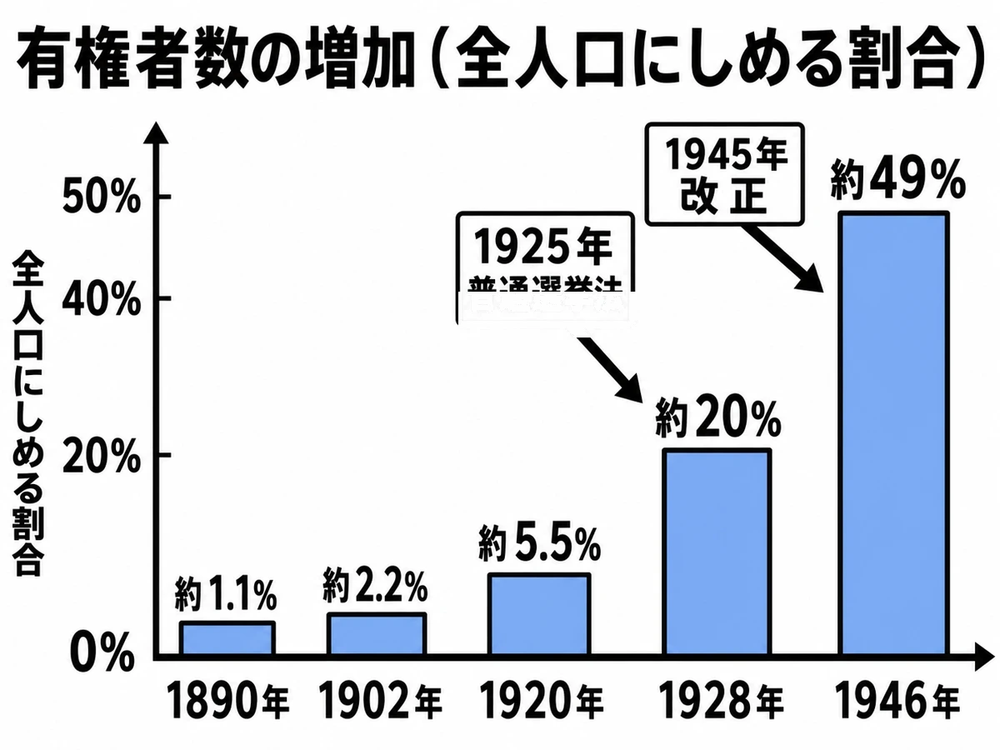

‹ 単元一覧にもどる
歴史 ⑭問題集
大正デモクラシー
大正時代
 いっしょに
いっしょにがんばろう！
年
年表でチェック
（ ）をタップすると答えが出るよ。まずは自分で言ってから確かめよう！
| 年代 | できごと |
|---|---|
| 1911年 | が女性誌「青鞜」を創刊する |
| 1912〜13年 | 藩閥政治に反対するが起こる |
| 1918年 | 米騒動をきっかけに内閣が成立する |
| 1920年 | 平塚らいてう・市川房枝らがを結成する |
| 1921年 | 労働組合の全国組織が成立する |
| 1922年 | 被差別部落解放を目指すが結成される |
| 1922年 | 賀川豊彦らが小作争議を主導するを結成する |
| 1923年 | が起こる |
| 1925年 | 日本でが始まる |
| 1925年 | 25歳以上の男子に選挙権を与えるが制定される |
| 1925年 | 社会主義などを取り締まるが制定される |
| 1926年 | 改造社が1冊1円のを売り出す |
| 1929年 | 小林多喜二が「」を発表する |
1
政治の変革
▶やり方をえらぼう目次にもどれば何度でも変えられるよ
解答
採点
順番
順番
A要点まとめ（ ）をタップして確かめよう
📖 先に参考書で理解する
大正期、民主主義を求める風潮であるが広がった。1912年から13年にかけて、尾崎行雄や犬養毅らが「閥族打破・憲政擁護」を掲げてを起こし、第3次桂太郎内閣を退陣に追い込んだ。東京帝大教授のは、天皇のもとでも民衆の意思を政治に生かすべきだとするを唱え、この風潮を理論的に支えた。1918年、米騒動をきっかけに立憲政友会総裁のが本格的な政党内閣を組織し、爵位を持たないことから「」と呼ばれた。1925年には加藤高明内閣のもとで、25歳以上のすべての男子に選挙権を与えるが制定される一方、社会主義など反体制思想を取り締まるも同時に制定された。
▶ここからは一問一答答え合わせのやり方をえらぼう
B一問一答1 / 11
大正期に広まった民主主義を求める風潮は？
📖 解説を読む（ヒント）
大正デモクラシー
大正期、第一次護憲運動や吉野作造の民本主義を背景に、政党政治の発展や普通選挙の実現を求める風潮が広がった。
B一問一答2 / 11
1912〜13年に藩閥政治に反対し、第3次桂太郎内閣を退陣に追い込んだ運動は？
📖 解説を読む（ヒント）
第一次護憲運動
尾崎行雄・犬養毅らが「閥族打破・憲政擁護」を掲げた。1924年の第二次護憲運動と区別する。
B一問一答3 / 11
大正デモクラシーの理論的指導者で、民本主義を唱えた政治学者は？
📖 解説を読む（ヒント）
吉野作造
東京帝大教授で大正デモクラシーの理論的指導者。天皇主権下で民衆の意思を政治に反映する「民本主義」を提唱した。
B一問一答4 / 11
吉野作造が唱えた、民衆の意思を政治に反映させる考えは？
📖 解説を読む（ヒント）
民本主義
吉野作造が提唱。国の主役は国民とまでは言わず、天皇のもとでも国民の声を政治に生かすべきとした考え方。
B一問一答5 / 11
1918年に成立した日本初の本格的政党内閣の首相は？
📖 解説を読む（ヒント）
原敬
立憲政友会総裁。米騒動後の1918年に組閣し、爵位を持たないことから「平民宰相」と呼ばれた本格的政党内閣の首相。
B一問一答7 / 11
1925年に制定された、25歳以上のすべての男子に選挙権を与えた法律は？
📖 解説を読む（ヒント）
普通選挙法
1925年に加藤高明内閣が制定し、納税額の制限を撤廃。25歳以上の男子に選挙権を与えたが、女性は除外された。
B一問一答8 / 11
普通選挙法と治安維持法が制定された年は？
📖 解説を読む（ヒント）
1925年
1925年は加藤高明内閣が普通選挙法と治安維持法を同時に制定し、民主化と思想統制が並行して進められた年。
B一問一答9 / 11
1925年に制定された、社会主義など反体制思想を取り締まる法律は？
📖 解説を読む（ヒント）
治安維持法
1925年に加藤高明内閣が普通選挙法と同時に制定。天皇制を変えたり財産制度を壊そうとする動きを厳しく取り締まった。
B一問一答10 / 11
1925年に普通選挙法を制定した憲政会総裁の首相は？
📖 解説を読む（ヒント）
加藤高明
憲政会総裁。1925年に普通選挙法と治安維持法を制定し、以後8年間続く政党内閣の安定期（憲政の常道）を開いた。
B一問一答11 / 11
1925年の普通選挙法で選挙権を持ったのは？
📖 解説を読む（ヒント）
25歳以上の男子
1925年の普通選挙法で納税額の制限が撤廃され、25歳以上の男子全員に選挙権が与えられた。女性は除外された。
B一問一答全11問・まとめて採点
まず全部の問題にこたえてから、下のボタンでまとめて答え合わせしよう！
(1)大正期に広まった民主主義を求める風潮は？
大正デモクラシー
大正期、第一次護憲運動や吉野作造の民本主義を背景に、政党政治の発展や普通選挙の実現を求める風潮が広がった。
(2)1912〜13年に藩閥政治に反対し、第3次桂太郎内閣を退陣に追い込んだ運動は？
第一次護憲運動
尾崎行雄・犬養毅らが「閥族打破・憲政擁護」を掲げた。1924年の第二次護憲運動と区別する。
(3)大正デモクラシーの理論的指導者で、民本主義を唱えた政治学者は？
吉野作造
東京帝大教授で大正デモクラシーの理論的指導者。天皇主権下で民衆の意思を政治に反映する「民本主義」を提唱した。
(4)吉野作造が唱えた、民衆の意思を政治に反映させる考えは？
民本主義
吉野作造が提唱。国の主役は国民とまでは言わず、天皇のもとでも国民の声を政治に生かすべきとした考え方。
(5)1918年に成立した日本初の本格的政党内閣の首相は？
原敬
立憲政友会総裁。米騒動後の1918年に組閣し、爵位を持たないことから「平民宰相」と呼ばれた本格的政党内閣の首相。
(6)原敬内閣が成立した年は？
1918年
1918年、米騒動で寺内内閣が退陣し、立憲政友会総裁の原敬が初の本格的政党内閣を組織した年。
(7)1925年に制定された、25歳以上のすべての男子に選挙権を与えた法律は？
普通選挙法
1925年に加藤高明内閣が制定し、納税額の制限を撤廃。25歳以上の男子に選挙権を与えたが、女性は除外された。
(8)普通選挙法と治安維持法が制定された年は？
1925年
1925年は加藤高明内閣が普通選挙法と治安維持法を同時に制定し、民主化と思想統制が並行して進められた年。
(9)1925年に制定された、社会主義など反体制思想を取り締まる法律は？
治安維持法
1925年に加藤高明内閣が普通選挙法と同時に制定。天皇制を変えたり財産制度を壊そうとする動きを厳しく取り締まった。
(10)1925年に普通選挙法を制定した憲政会総裁の首相は？
加藤高明
憲政会総裁。1925年に普通選挙法と治安維持法を制定し、以後8年間続く政党内閣の安定期（憲政の常道）を開いた。
(11)1925年の普通選挙法で選挙権を持ったのは？
25歳以上の男子
1925年の普通選挙法で納税額の制限が撤廃され、25歳以上の男子全員に選挙権が与えられた。女性は除外された。
E資料問題写真を見て答えよう

(1)グラフのように有権者の割合が1928年に大きく増えたのは、25歳以上のすべての男子に選挙権を認めた1925年成立の何という法律によるか。
(2)グラフで1946年に割合が約49%へ急増したのは、選挙権が満20歳以上の男女に認められ、だれが初めて投票できるようになったからか。

2
社会運動の広がり
▶やり方をえらぼう目次にもどれば何度でも変えられるよ
解答
採点
順番
順番
A要点まとめ（ ）をタップして確かめよう
📖 先に参考書で理解する
大正期には、労働者・農民・女性・被差別部落の人々による社会運動が広がった。工場労働者の増加を背景に労働組合が結成され、1921年には全国組織のが成立した。1922年には賀川豊彦らがを結成し、小作料の引き下げを求める小作争議を全国的に主導した。同じ1922年、被差別部落出身者は京都でを結成し、「人の世に熱あれ、人間に光あれ」で結ばれるを発表して自主的な差別解消を訴えた。女性運動では、1911年にが女性誌「」を創刊して女性の解放を訴え、1920年にはらとともにを結成し、女性の政治集会参加を禁じた治安警察法第5条の改正を求めた。1923年にはが起こり、混乱の中でデマにより多くの朝鮮人・中国人が迫害される事件も起きた。
▶ここからは一問一答答え合わせのやり方をえらぼう
B一問一答1 / 12
労働者が労働条件改善を求めて行った運動は？
📖 解説を読む（ヒント）
労働運動
大正期、工場労働者の増加を背景に労働組合が次々と結成され、1921年には全国組織の日本労働総同盟が成立した。
B一問一答2 / 12
小作料の引き下げなどを求めた農民の運動は？
📖 解説を読む（ヒント）
農民運動
1922年に賀川豊彦らが日本農民組合を結成し、小作料の引き下げを求める小作争議を全国的に主導した。
B一問一答3 / 12
1922年、部落差別の解消を目指して結成された組織は？
📖 解説を読む（ヒント）
全国水平社
1922年に京都で結成された被差別部落出身者の組織。「水平社宣言」を発表し、差別からの自主的解放を目指した。
B一問一答4 / 12
全国水平社・日本農民組合が結成された年は？
📖 解説を読む（ヒント）
1922年
1922年は全国水平社・日本農民組合が結成され、被差別部落民や農民の権利を求める社会運動が広がる転換点となった。
B一問一答5 / 12
「青鞜」を創刊し、女性解放運動を進めた人物は？
📖 解説を読む（ヒント）
平塚らいてう
1911年に女性誌「青鞜」を創刊。「もともと女性は太陽だった」と宣言し、女性の解放を訴える運動を進めた。
B一問一答6 / 12
1911年に平塚らいてうが創刊した女性誌は？
📖 解説を読む（ヒント）
青鞜
1911年に平塚らいてうが創刊した女性誌。「もともと女性は太陽だった」の宣言を載せ、女性の自立を訴えた。
B一問一答7 / 12
1920年、平塚らいてう・市川房枝らが結成した女性団体は？
📖 解説を読む（ヒント）
新婦人協会
1920年に平塚らいてう・市川房枝らが結成。女性の政治集会参加を禁じた治安警察法第5条の改正を求め、女性の政治参加を目指した。
B一問一答8 / 12
新婦人協会を結成し、婦人参政権獲得運動を主導した女性運動家は？
📖 解説を読む（ヒント）
市川房枝
1920年に平塚らいてうらと新婦人協会を結成し、女性の政治集会参加禁止の撤廃を実現。戦後も婦人参政権獲得運動を主導した。
B一問一答9 / 12
北海道旧土人保護法によって生活が圧迫された北方民族は？
📖 解説を読む（ヒント）
アイヌ
1899年制定の北海道旧土人保護法による明治政府の同化政策で、伝統文化や言語が大きく損なわれた北方の先住民族。
B一問一答10 / 12
1922年、全国水平社の結成大会で発表された宣言は？
📖 解説を読む（ヒント）
水平社宣言
1922年の全国水平社結成大会で発表。「人の世に熱あれ、人間に光あれ」で結ばれ、自主的な差別撤廃を訴えた。
B一問一答11 / 12
1923年に起きた、関東地方の大地震は？
📖 解説を読む（ヒント）
関東大震災
1923年9月1日に発生。死者・行方不明者10万人以上を出し、混乱の中でデマによる朝鮮人虐殺など社会不安が広がった。
B一問一答12 / 12
関東大震災が起きた年は？
📖 解説を読む（ヒント）
1923年
1923年9月1日に発生した関東大震災の年。死者・行方不明者10万人以上を出し、首都圏に甚大な被害をもたらした。
B一問一答全12問・まとめて採点
まず全部の問題にこたえてから、下のボタンでまとめて答え合わせしよう！
(1)労働者が労働条件改善を求めて行った運動は？
労働運動
大正期、工場労働者の増加を背景に労働組合が次々と結成され、1921年には全国組織の日本労働総同盟が成立した。
(2)小作料の引き下げなどを求めた農民の運動は？
農民運動
1922年に賀川豊彦らが日本農民組合を結成し、小作料の引き下げを求める小作争議を全国的に主導した。
(3)1922年、部落差別の解消を目指して結成された組織は？
全国水平社
1922年に京都で結成された被差別部落出身者の組織。「水平社宣言」を発表し、差別からの自主的解放を目指した。
(4)全国水平社・日本農民組合が結成された年は？
1922年
1922年は全国水平社・日本農民組合が結成され、被差別部落民や農民の権利を求める社会運動が広がる転換点となった。
(5)「青鞜」を創刊し、女性解放運動を進めた人物は？
平塚らいてう
1911年に女性誌「青鞜」を創刊。「もともと女性は太陽だった」と宣言し、女性の解放を訴える運動を進めた。
(6)1911年に平塚らいてうが創刊した女性誌は？
青鞜
1911年に平塚らいてうが創刊した女性誌。「もともと女性は太陽だった」の宣言を載せ、女性の自立を訴えた。
(7)1920年、平塚らいてう・市川房枝らが結成した女性団体は？
新婦人協会
1920年に平塚らいてう・市川房枝らが結成。女性の政治集会参加を禁じた治安警察法第5条の改正を求め、女性の政治参加を目指した。
(8)新婦人協会を結成し、婦人参政権獲得運動を主導した女性運動家は？
市川房枝
1920年に平塚らいてうらと新婦人協会を結成し、女性の政治集会参加禁止の撤廃を実現。戦後も婦人参政権獲得運動を主導した。
(9)北海道旧土人保護法によって生活が圧迫された北方民族は？
アイヌ
1899年制定の北海道旧土人保護法による明治政府の同化政策で、伝統文化や言語が大きく損なわれた北方の先住民族。
(10)1922年、全国水平社の結成大会で発表された宣言は？
水平社宣言
1922年の全国水平社結成大会で発表。「人の世に熱あれ、人間に光あれ」で結ばれ、自主的な差別撤廃を訴えた。
(11)1923年に起きた、関東地方の大地震は？
関東大震災
1923年9月1日に発生。死者・行方不明者10万人以上を出し、混乱の中でデマによる朝鮮人虐殺など社会不安が広がった。
(12)関東大震災が起きた年は？
1923年
1923年9月1日に発生した関東大震災の年。死者・行方不明者10万人以上を出し、首都圏に甚大な被害をもたらした。
3
大衆文化の成熟
▶やり方をえらぼう目次にもどれば何度でも変えられるよ
解答
採点
順番
順番
A要点まとめ（ ）をタップして確かめよう
📖 先に参考書で理解する
1925年のラジオ放送開始や新聞・雑誌・映画の普及を背景に、都市の一般大衆に広がった文化をという。は1925年に東京・大阪・名古屋で始まり、後の日本放送協会(NHK)となった。大正期に人気を集めた無声は、昭和初期には音声付きのトーキーへと発展し、都市の娯楽として定着した。1926年には改造社が1冊1円で文学全集を売り出し、「」と呼ばれて読書の大衆化を進めた。洋装で銀座などを闊歩する都市の若者は「」と呼ばれた。文学では、が「羅生門」「鼻」など短編で人間心理を描き、武者小路実篤やらは人道主義に基づく作品を発表した。1929年、は「蟹工船」で労働者の過酷な実態を描き、の代表作となった。都市郊外には和洋折衷の文化住宅も広まった。
▶ここからは一問一答答え合わせのやり方をえらぼう
B一問一答1 / 12
大正〜昭和初期に都市の一般大衆に広がった文化は？
📖 解説を読む（ヒント）
大衆文化
1925年のラジオ放送開始や新聞・雑誌・映画の普及を背景に、都市の一般大衆に広がった文化。
B一問一答2 / 12
1925年に日本で始まったメディアは？
📖 解説を読む（ヒント）
ラジオ放送
1925年に東京・大阪・名古屋で放送が始まり、後の日本放送協会（NHK）となった。大衆文化の中心。
B一問一答4 / 12
大正期に普及し、無声から音声付きへと発展した映像メディアは？
📖 解説を読む（ヒント）
映画
大正期に無声映画が人気となり、昭和初期にはトーキー（音声付き）に発展。都市の娯楽として定着した。
B一問一答5 / 12
1冊1円で売り出され、ベストセラーとなった文学全集は？
📖 解説を読む（ヒント）
円本
1926年に改造社が刊行した「現代日本文学全集」が代表例。1冊1円の安さで読書の大衆化を進めた。
B一問一答6 / 12
大正末〜昭和初期の流行を取り入れた若者を呼んだ言葉は？
📖 解説を読む（ヒント）
モボ・モガ
モダンボーイ・モダンガールの略。大正末〜昭和初期、洋装で銀座などを闊歩した都市の若者を指した。
B一問一答10 / 12
武者小路実篤・志賀直哉らが結成した文学の流派は？
📖 解説を読む（ヒント）
白樺派
雑誌「白樺」に集まった武者小路実篤・志賀直哉らの文学グループ。人間愛と理想を大切にする作品を発表した。
B一問一答11 / 12
労働者・農民の生活を描いた文学運動は？
📖 解説を読む（ヒント）
プロレタリア文学
貧しい労働者や農民の暮らしを、社会の仕組みを変える視点で描いた文学。小林多喜二「蟹工船」が代表作。
B一問一答12 / 12
和洋折衷で台所や応接間を備えた都市住宅は？
📖 解説を読む（ヒント）
文化住宅
大正末〜昭和初期、和洋折衷で台所や応接間を備えた都市住宅。郊外でサラリーマン層を中心に普及した。
B一問一答全12問・まとめて採点
まず全部の問題にこたえてから、下のボタンでまとめて答え合わせしよう！
(1)大正〜昭和初期に都市の一般大衆に広がった文化は？
大衆文化
1925年のラジオ放送開始や新聞・雑誌・映画の普及を背景に、都市の一般大衆に広がった文化。
(2)1925年に日本で始まったメディアは？
ラジオ放送
1925年に東京・大阪・名古屋で放送が始まり、後の日本放送協会（NHK）となった。大衆文化の中心。
(3)日本でラジオ放送が始まった年は？
1925年
1925年は普通選挙法・治安維持法が制定された年でもあり、大衆社会への転換点となった。
(4)大正期に普及し、無声から音声付きへと発展した映像メディアは？
映画
大正期に無声映画が人気となり、昭和初期にはトーキー（音声付き）に発展。都市の娯楽として定着した。
(5)1冊1円で売り出され、ベストセラーとなった文学全集は？
円本
1926年に改造社が刊行した「現代日本文学全集」が代表例。1冊1円の安さで読書の大衆化を進めた。
(6)大正末〜昭和初期の流行を取り入れた若者を呼んだ言葉は？
モボ・モガ
モダンボーイ・モダンガールの略。大正末〜昭和初期、洋装で銀座などを闊歩した都市の若者を指した。
(7)「羅生門」「鼻」を著した大正期の作家は？
芥川龍之介
大正期の新思潮派を代表する作家で、「羅生門」「鼻」など短編小説で人間心理を鋭く描いた。
(8)「暗夜行路」を著した白樺派の作家は？
志賀直哉
白樺派の代表作家で、長編「暗夜行路」で人道主義・個人主義に基づく内面を描いた。「小説の神様」とも。
(9)「蟹工船」を著したプロレタリア文学の作家は？
小林多喜二
1929年発表の「蟹工船」で漁船労働者の過酷な実態を描き、プロレタリア文学の代表となった。
(10)武者小路実篤・志賀直哉らが結成した文学の流派は？
白樺派
雑誌「白樺」に集まった武者小路実篤・志賀直哉らの文学グループ。人間愛と理想を大切にする作品を発表した。
(11)労働者・農民の生活を描いた文学運動は？
プロレタリア文学
貧しい労働者や農民の暮らしを、社会の仕組みを変える視点で描いた文学。小林多喜二「蟹工船」が代表作。
(12)和洋折衷で台所や応接間を備えた都市住宅は？
文化住宅
大正末〜昭和初期、和洋折衷で台所や応接間を備えた都市住宅。郊外でサラリーマン層を中心に普及した。
解答
年表でチェック
平塚らいてう 第一次護憲運動 原敬 新婦人協会 日本労働総同盟 全国水平社 日本農民組合 関東大震災 ラジオ放送 普通選挙法 治安維持法 円本 蟹工船
1 政治の変革
A 要点まとめ① 大正デモクラシー ② 第一次護憲運動 ③ 吉野作造 ④ 民本主義 ⑤ 原敬 ⑥ 平民宰相 ⑦ 普通選挙法 ⑧ 治安維持法
B 一問一答(1) 大正デモクラシー (2) 第一次護憲運動 (3) 吉野作造 (4) 民本主義 (5) 原敬 (6) 1918年 (7) 普通選挙法 (8) 1925年 (9) 治安維持法 (10) 加藤高明 (11) 25歳以上の男子
C 実戦問題(1) ウ（吉野作造） (2) ウ（民本主義） (3) ア（第一次護憲運動） (4) イ（立憲政友会） (5) ア（加藤高明） (6) エ（米騒動） (7) ウ（25歳以上の男子） (8) イ（平民宰相）
D 記述問題
(1) 尾崎行雄や犬養毅らが「閥族打破・憲政擁護」を掲げて藩閥中心の政治に反対し、桂太郎内閣を退陣に追い込むために起こしたから。
(2) 有権者が大幅に増えて政治参加が広がった一方、社会主義など反体制思想の取り締まりも強まった。
(3) 天皇が主権を持つ大日本帝国憲法のもとでも、民衆の意思にもとづいて政治を行うべきだという民本主義の考え。
E 資料問題(1) 普通選挙法 (2) 女性
2 社会運動の広がり
A 要点まとめ① 日本労働総同盟 ② 日本農民組合 ③ 全国水平社 ④ 水平社宣言 ⑤ 平塚らいてう ⑥ 青鞜 ⑦ 市川房枝 ⑧ 新婦人協会 ⑨ 関東大震災
B 一問一答(1) 労働運動 (2) 農民運動 (3) 全国水平社 (4) 1922年 (5) 平塚らいてう (6) 青鞜 (7) 新婦人協会 (8) 市川房枝 (9) アイヌ (10) 水平社宣言 (11) 関東大震災 (12) 1923年
C 実戦問題(1) ウ（新婦人協会） (2) ウ（市川房枝） (3) エ（1922年） (4) イ（日本農民組合） (5) ウ（9月1日） (6) イ（平塚らいてう） (7) ア（人の世に熱あれ、人間に光あれ） (8) ア（朝鮮人・中国人への迫害）
D 記述問題
(1) 女性の政治集会への参加を禁じていた治安警察法第5条を改正させ、女性の政治参加を実現するため。
(2) 「朝鮮人が井戸に毒を入れた」などのデマが広まり、自警団により多くの朝鮮人・中国人が迫害される事件が起きた。
(3) 被差別部落の人々が、自分たちの力で社会的な差別をなくすことを目指して結成した。
3 大衆文化の成熟
A 要点まとめ① 大衆文化 ② ラジオ放送 ③ 映画 ④ 円本 ⑤ モボ・モガ ⑥ 芥川龍之介 ⑦ 志賀直哉 ⑧ 白樺派 ⑨ 小林多喜二 ⑩ プロレタリア文学
B 一問一答(1) 大衆文化 (2) ラジオ放送 (3) 1925年 (4) 映画 (5) 円本 (6) モボ・モガ (7) 芥川龍之介 (8) 志賀直哉 (9) 小林多喜二 (10) 白樺派 (11) プロレタリア文学 (12) 文化住宅
C 実戦問題(1) エ（1925年） (2) イ（小林多喜二） (3) ア（モボ・モガ） (4) イ（円本） (5) エ（白樺派） (6) ア（志賀直哉） (7) イ（プロレタリア文学） (8) ウ（文化住宅）
D 記述問題
(1) 改造社が「円本」と呼ばれる1冊1円の文学全集を売り出し、読書の大衆化を進める役割を果たした。
(2) 労働者や農民の貧しい暮らしを、社会の仕組みを変えようとする視点で描いた文学運動のことである。